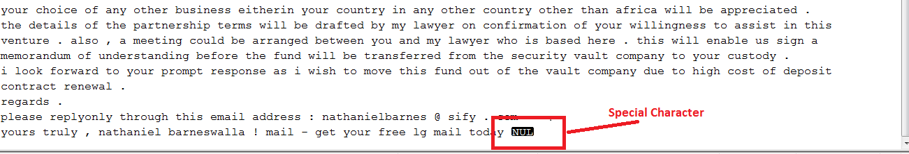

Build a Spam Filter

0. Introduction to NLP and Sentiment Analysis
1. Natural Language Processing with NTLK
3. Build a sentiment analysis program
4. Sentiment Analysis with Twitter
5. Analysing the Enron Email Corpus
6. Build a Spam Filter using the Enron Corpus
In this lesson, we will try to build a spam filter using the Enron email dataset, using everything we learnt so far
So this is the first guided practice session I’m trying. The aim is, I’ll give you hints on how to complete the lessons, same as I give in practice sessions. But I’ll also give you the solution in the next video.
You can only look at the solution videos if you want, but I recommend trying to solve the problem yourself first. If you have completed all the pre-requisites, the challenges should be easy.
The repo is here. Enron Spam Practice.ipynb is the file you will be working in, while Enron Spam Solution.ipynb contains the solutions.
Challenge 1: Print all the directories and files
The first video introduces the Enron Spam dataset. Get it from here: https://www.aueb.gr/users/ion/data/enron-spam/
Extract all into a folder called Enron Spam. You will need 7zip if you are on Windows. Spend some time studying how the emails are laid out. All the spam emails are in a folder called spam, while non-spam are in ham.
The first challenge is simply to print all the directories, sub directories and files in the folder. This should be quite simple, as it’s the first thing we did in the Enron example.
Solution 1
The solution is quite simple.
rootdir = "C:\\Users\\Shantnu\\Desktop\\Data Sources\\Enron Spam"
for directories, subdirs, files in os.walk(rootdir):
print(directories, subdirs, len(files))
C:\Users\Shantnu\Desktop\Data Sources\Enron Spam ['enron1', 'enron2', 'enron3', 'enron4', 'enron5', 'enron6'] 0
C:\Users\Shantnu\Desktop\Data Sources\Enron Spam\enron1 ['ham', 'spam'] 1
C:\Users\Shantnu\Desktop\Data Sources\Enron Spam\enron1\ham [] 3672
C:\Users\Shantnu\Desktop\Data Sources\Enron Spam\enron1\spam [] 1500
C:\Users\Shantnu\Desktop\Data Sources\Enron Spam\enron2 ['ham', 'spam'] 1
..... snipped ....
Challenge 2 Print only files in the Ham and Spam folder
The video for this has been mixed with the last solutions video (from 3:55 onwards).
The challenge is: Instead of printing all files and folders, only print the files when we are in the ham or spam folder.
I give you a hint. The os.path.split() can be used to find out which directory you are in. Like so:
print(os.path.split("C:\\Users\\Shantnu\\Desktop\\Data Sources\\Enron Spam\\enron1\\ham"))
print(os.path.split("C:\\Users\\Shantnu\\Desktop\\Data Sources\\Enron Spam\\enron1\\ham")[0])
print(os.path.split("C:\\Users\\Shantnu\\Desktop\\Data Sources\\Enron Spam\\enron1\\ham")[1])
('C:\\Users\\Shantnu\\Desktop\\Data Sources\\Enron Spam\\enron1', 'ham')
C:\Users\Shantnu\Desktop\Data Sources\Enron Spam\enron1
ham
The third example above shows you how to detect you are in the ham folder.
Solution 2
We take the code we had before and modify it, so that we are checking if we are in the ham or spam folder.
# Same as before, but only print the ham and spam folders
for directories, subdirs, files in os.walk(rootdir):
if (os.path.split(directories)[1] == 'ham'):
print(directories, subdirs, len(files))
if (os.path.split(directories)[1] == 'spam'):
print(directories, subdirs, len(files))
directories, subdirs, len(files))
C:\Users\Shantnu\Desktop\Data Sources\Enron Spam\enron1\ham [] 3672
C:\Users\Shantnu\Desktop\Data Sources\Enron Spam\enron1\spam [] 1500
C:\Users\Shantnu\Desktop\Data Sources\Enron Spam\enron2\ham [] 4361
C:\Users\Shantnu\Desktop\Data Sources\Enron Spam\enron2\spam [] 1496
... snipped ...
The key part is this:
if (os.path.split(directories)[1] == 'ham'):
print(directories, subdirs, len(files))
This is where we are checking if we are in the right folder.
Why does it matter?
Because when we start reading the files, we want to make sure we are only reading them from the spam and ham folders.
Challenge 3: Read all the files in the Ham and Spam folders
Now that you can print the files in the spam and ham folders, it’s time to go ahead and read all the files in those folders.
I’ve given you some code to start off:
ham_list = []
spam_list = []
# Same as before, but this time, read the files, and append them to the ham and spam list
# You WILL get a Unicode error for the spam part- either Google it, or look at my solution
print(ham_list[0])
print(spam_list[0])
There is a ham_list and spam_list, and you have to store the content of the files in these lists.
I give you a warning: The spam files will throw you a Unicode error when you try to read them. You can either Google for the solution, or look at mine. A hint is: It’s a unicode problem (duh) which will only be seen on Python 3, not 2.
But I still recommend you give the challenge a try. Feel free to comment out the spam part of the code, as the two parts are similar anyway.
Solution 3
Let’s look at the code in parts. First, the code to read the ham files:
for directories, subdirs, files in os.walk(rootdir):
if (os.path.split(directories)[1] == 'ham'):
for filename in files:
with open(os.path.join(directories, filename)) as f:
data = f.read()
ham_list.append(data)
It’s the same as before, except this part is new:
for filename in files:
with open(os.path.join(directories, filename)) as f:
data = f.read()
ham_list.append(data)
We loop over all the files, open each, read the text and append it to the ham_list. And we do the same for the spam list.
if (os.path.split(directories)[1] == 'spam'):
for filename in files:
with open(os.path.join(directories, filename)) as f:
data = f.read()
spam_list.append(data)
Run the code, and you will see the Unicode error. Why is that?
By putting in some extra debug, I found a few of the files throwing errors. One is the 2248.2004-09-23.GP.spam.txt in the Enron1/spam folder. Open this in a text editor:

You will note the file has special characters in it. This means it’s not a pure text (which is not that surprising, as it is spam).
Python 2 would allow you to get away with this. Python 3 won’t.
The way around this is to specify the encoding. Here’s a page with some details: https://python-notes.curiousefficiency.org/en/latest/python3/text_file_processing.html
The link explains the unicode error you get. It also tells you you have to specify the encoding. There are several options, but the simplest one is latin-1. This is closest to what Python 2 did.
The latin-1 encoding means Python will try its best to decode the text without throwing an error. The downside is, the data might be corrupted. However, this is spam, so we expect bad data. Also, we’ll have millions of words in the spam list, and even if 1-2 are corrupt, we can live with that.
So the way to stop Python throwing an error is to change this line to add an encoding:
with open(os.path.join(directories, filename), encoding="latin-1") as f:
The code now works.
Challenge 4 Prepare our data for the Naive Bayes filter
We will be using the Naive Bayes for our spam filter. If you have done the Nltk lessons, you know it expects the input in a particular format. That’s the goal of this challenge. I give you a few hints:
# Write a function , that when passed in words, will return a dictionary of the form
# {Word1: True, Word2: True, Words3: True}
# Removing stop words is optional
def create_word_features(words):
pass
So the first thing is to write a create_word_features() function. The second is to use this (with word tokenize):
ham_list = []
spam_list = []
# Same as before, but this time:
# 1. Break the sentences into words using word_tokenize
# 2. Use the create_word_features() function you just wrote
print(ham_list[0])
print(spam_list[0])
Solution 4
Since this stuff has been covered in the Ntlk tutorial, I will zip through it a bit.
First, the create_word_features() function:
def create_word_features(words):
my_dict = dict( [ (word, True) for word in words] )
return my_dict
create_word_features(["the", "quick", "brown", "quick", "a", "fox"])
{'a': True, 'brown': True, 'fox': True, 'quick': True, 'the': True}
We are just creating a dictionary that returns True for each word. I’m not removing stop words for this example.
Next, we use our function. I’m going to be working with the code from the previous example. This is what we did last time:
for directories, subdirs, files in os.walk(rootdir):
if (os.path.split(directories)[1] == 'ham'):
for filename in files:
with open(os.path.join(directories, filename)) as f:
data = f.read()
ham_list.append(data)
We were reading the data and appending it to ham_list. This will now change to:
with open(os.path.join(directories, filename), encoding="latin-1") as f:
data = f.read()
# The data we read is one big string. We need to break it into words.
words = word_tokenize(data)
ham_list.append((create_word_features(words), "ham"))
So we break the text into words with:
# The data we read is one big string. We need to break it into words.
words = word_tokenize(data)
And then we call the function we wrote:
ham_list.append((create_word_features(words), "ham"))
We are appending a “ham” at the end. This is to tell the machine learning algorithm that this text is of type ham. The actual word doesn’t matter, as long as it’s consistent.
We will do the same for the spam list, so the final code looks like:
ham_list = []
spam_list = []
# Same as before, but this time:
# 1. Break the sentences into words using word_tokenize
# 2. Use the create_word_features() function you just wrote
for directories, subdirs, files in os.walk(rootdir):
if (os.path.split(directories)[1] == 'ham'):
for filename in files:
with open(os.path.join(directories, filename), encoding="latin-1") as f:
data = f.read()
# The data we read is one big string. We need to break it into words.
words = word_tokenize(data)
ham_list.append((create_word_features(words), "ham"))
if (os.path.split(directories)[1] == 'spam'):
for filename in files:
with open(os.path.join(directories, filename), encoding="latin-1") as f:
data = f.read()
# The data we read is one big string. We need to break it into words.
words = word_tokenize(data)
spam_list.append((create_word_features(words), "spam"))
print(ham_list[0])
print(spam_list[0])
This looks fairly complex, but since we built it in parts, it should be easy to follow.
Challenge 5 Create the Test/Train data, call the Naive Bayes Filter
We are reaching the final steps. The next challenge is to create test / train samples. I give you some code:
combined_list = ham_list + spam_list
random.shuffle(combined_list)
We combine our spam and ham list, and then shuffle it, so that it is randomised.
The first thing you need to do is create test/train splits:
# Create a test and train section.
# 70% of the data is training. 30% is test
And then call the Naive Bayes filter, and find the accuracy:
# Create the Naive Bayes filter
# Find the accuracy, using the test data
print("Accuracy is: ", accuracy * 100)
Solution 5
We start by calculating what 70% of the data will be.
training_part = int(len(combined_list) * .7)
I’m converting it to int() so I can get a whole number.
We then divide our samples into test and training sets:
print(len(combined_list))
training_set = combined_list[:training_part]
test_set = combined_list[training_part:]
print (len(training_set))
print (len(test_set))
33716
23601
10115
We now create the Naive Bayes filter with the training data, and test with test data:
# Create the Naive Bayes filter
classifier = NaiveBayesClassifier.train(training_set)
# Find the accuracy, using the test data
accuracy = nltk.classify.util.accuracy(classifier, test_set)
print("Accuracy is: ", accuracy * 100)
Accuracy is: 98.50716757291151
We are getting an accuracy of 98%, which is good.
We will also look at the most interesting features:
classifier.show_most_informative_features(20)
enron = True ham : spam = 3588.6 : 1.0
hpl = True ham : spam = 577.0 : 1.0
php = True spam : ham = 416.2 : 1.0
713 = True ham : spam = 326.3 : 1.0
louise = True ham : spam = 299.2 : 1.0
xls = True ham : spam = 281.8 : 1.0
stinson = True ham : spam = 267.4 : 1.0
crenshaw = True ham : spam = 251.5 : 1.0
ect = True ham : spam = 231.2 : 1.0
corel = True spam : ham = 220.5 : 1.0
macromedia = True spam : ham = 210.9 : 1.0
scheduling = True ham : spam = 209.6 : 1.0
= True ham : spam = 184.1 : 1.0
sex = True spam : ham = 182.3 : 1.0
xp = True spam : ham = 172.6 : 1.0
daren = True ham : spam = 168.7 : 1.0
1933 = True spam : ham = 152.1 : 1.0
spam = True spam : ham = 145.1 : 1.0
parsing = True ham : spam = 137.6 : 1.0
penis = True spam : ham = 117.2 : 1.0
So the word Enron is more likely to appear in ham emails than spam, while sex is more likely to appear in spam. php also appears a lot in spam, but that maybe a 90s thing (as do corel and macromedia, both expensive software).
Challenge 6: Identify messages as spam or ham
We have 3 messages we want to classify as spam or ham:
# Clasify the below as spam or ham
# Hint: 1. Break into words using word_tokenzise
# 2. create_word_features
# 3. Use the classify function
msg1 = '''Hello th̓ere seُx master :-)
i need c0ck ri͏ght noِw ..͏. don't tell my hǔbbٚy.ٚ. ))
My sc͕rٞeٚe̻nname is Dorry.
My accֺo֔unt is h֯ere: http:nxusxbnd.GirlsBadoo.ru
C u late٘r!'''
msg2 = '''As one of our top customers we are providing 10% OFF the total of your next used book purchase from www.letthestoriesliveon.com. Please use the promotional code, TOPTENOFF at checkout. Limited to 1 use per customer. All books have free shipping within the contiguous 48 United States and there is no minimum purchase.
We have millions of used books in stock that are up to 90% off MRSP and add tens of thousands of new items every day. Don’t forget to check back frequently for new arrivals.'''
msg3 = '''To start off, I have a 6 new videos + transcripts in the members section. In it, we analyse the Enron email dataset, half a million files, spread over 2.5GB. It's about 1.5 hours of video.
I have also created a Conda environment for running the code (both free and member lessons). This is to ensure everyone is running the same version of libraries, preventing the Works on my machine problems. If you get a second, do you mind trying it here?'''
The first is clearly spam. The 2nd is also spam, but doesn’t use spam like language. The 3rd is my own email (and should not be classified as spam!)
At the top, I give you a hint about what to do. There are 3 steps: 1) Break into words 2) Create word features 3) Call the classify() function.
Solution 6
There isn’t a lot to explain in this code:
words = word_tokenize(msg1)
features = create_word_features(words)
print("Message 1 is :" ,classifier.classify(features))
Message 1 is : spam
words = word_tokenize(msg2)
features = create_word_features(words)
print("Message 2 is :" ,classifier.classify(features))
words = word_tokenize(msg2)
features = create_word_features(words)
print("Message 2 is :" ,classifier.classify(features))
Message 2 is : spam
words = word_tokenize(msg3)
features = create_word_features(words)
print("Message 3 is :" ,classifier.classify(features))
Message 3 is : ham
And there you go. A simple spam filter.
Some final comments: This spam filter was built for spam in the 90s, and the type of spam messages has grown. If you wanted to use this today, you would add a few modern spam messages to the training data, and retrain.
I hope you also appreciated how complex looking code becomes easy if you build it in small parts.